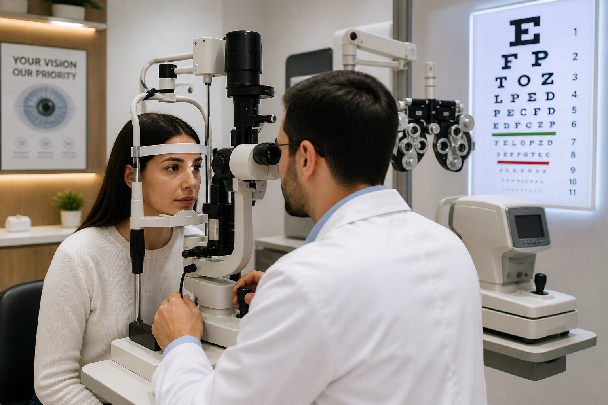
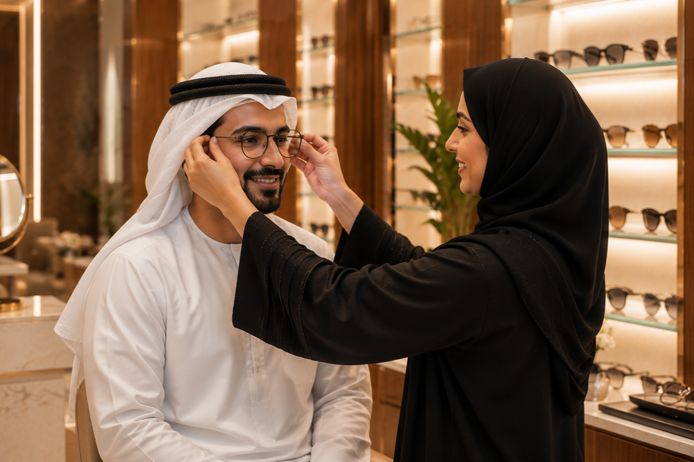
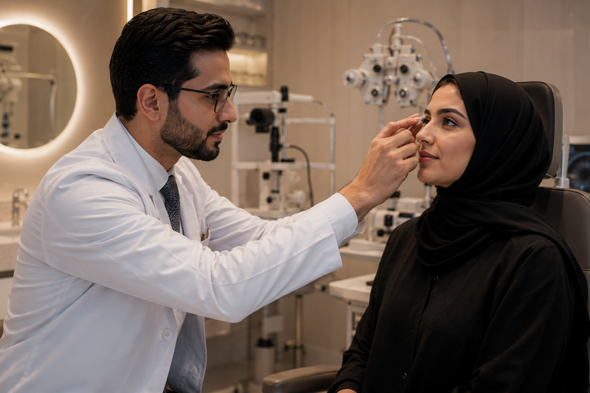
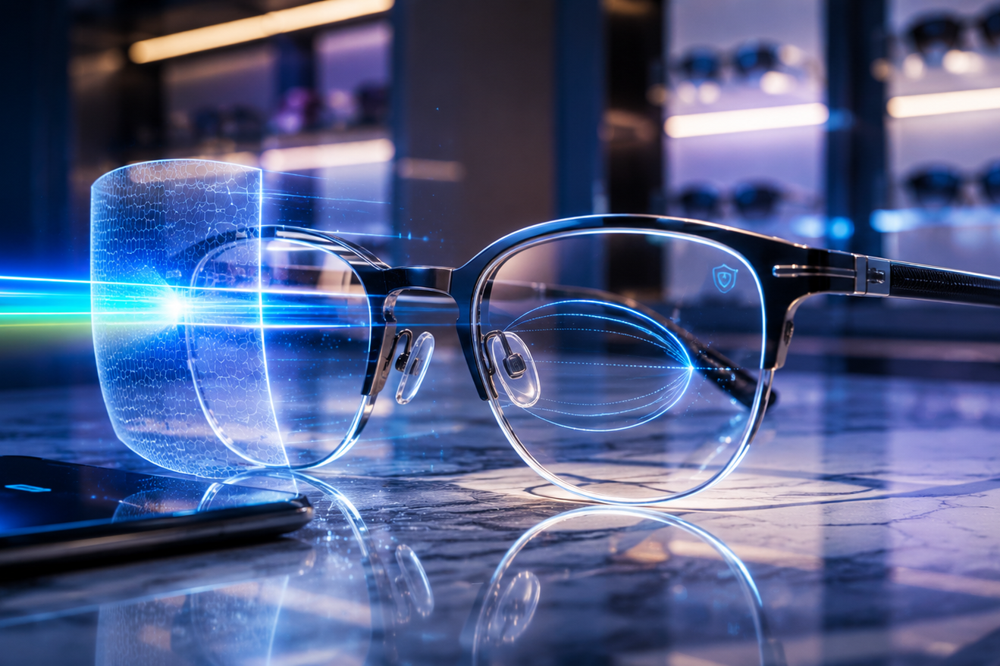
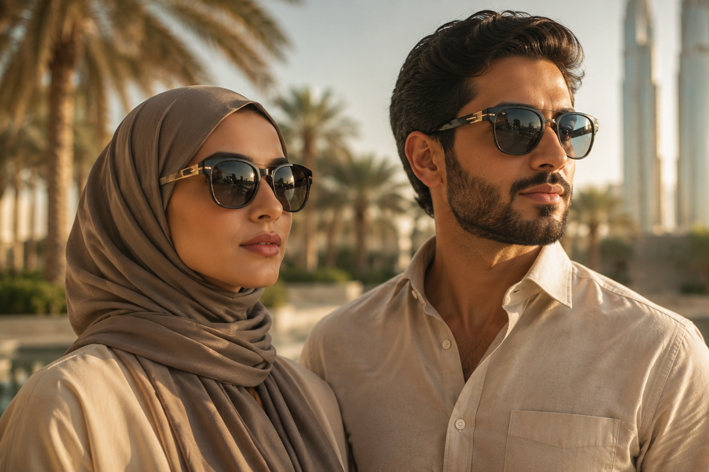
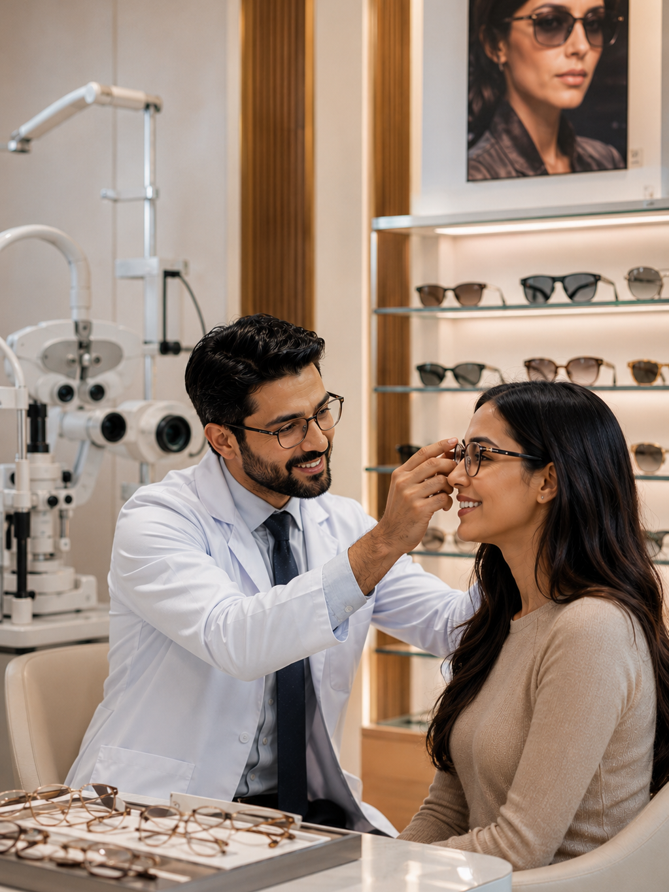

Eye Testing
Comprehensive exams with modern diagnostic tools.
What We Offer

Comprehensive exams with modern diagnostic tools.

High-quality frames and lenses fitted to you.

Comfortable daily and monthly lens options.

Blue-light, anti-glare, and progressive lenses.

Fast in-store repairs and precise fitting.

UV-protected stylish sunglasses for all lifestyles.
Why Choose Us
Every visit combines clinical precision, premium products, and personal attention — so you leave with vision care you can trust.
 Experienced Optometrists
Experienced Optometrists
 Advanced Diagnostic Technology
Advanced Diagnostic Technology
 Premium International Brands
Premium International Brands
 Personalized Consultation
Personalized Consultation
 Corporate Vision Care
Corporate Vision Care
 AI Frame Finder
AI Frame Finder

Service FAQs
Pricing depends on the type of examination and whether your insurance plan covers it. Call or WhatsApp +971 56 774 3136 and our team will give you a clear answer before you visit.
Yes. We carry out certified eye tests for driving licence applications and renewals, quickly and accurately.
Most adults should have an eye test about every two years, or every year if you wear glasses or contact lenses, have diabetes, or notice changes in your vision. Children should be tested whenever there is a concern.
Yes. We offer contact lens fittings and a range of daily and monthly lenses. Our optometrists will check that your lenses are comfortable and suit your eyes.
Yes. We carry out quick adjustments and repairs such as nose pads, screws and alignment so your glasses fit comfortably again.
Blue-light filtering and anti-reflective lenses can reduce discomfort during long screen sessions. Our optometrists will recommend the right option based on your prescription and how you work.
We work with ADNIC, NAS, Nextcare, Mednet, Orient and Saico Health. Coverage depends on your individual plan, so please bring your insurance card or call us before your visit to confirm.
Many insurance plans include vision benefits, but terms differ by plan. Our team will help you check what your plan covers and guide you through the process.